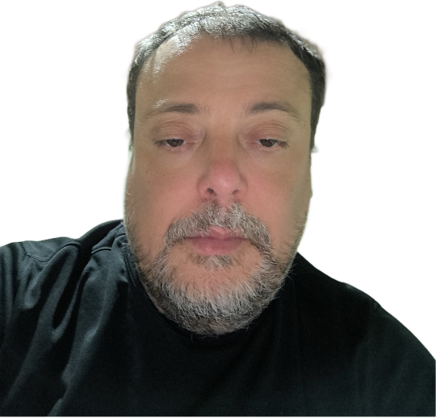

O correto
e não o simples
Não procuro o simples, mas o correto.
Quem sou eu
Gosto de pensar que sou uma pessoa sempre em busca de algo.

O correto
e não o simples
Não procuro o simples, mas o correto.
O quadro geral
e não só as discrepâncias
Procuro olhar o quadro geral, sem me prender apenas às discrepâncias.
O novo
e não só o usual
Penso no novo, e não apenas no que é usual.
Esses princípios guiaram quase 30 anos de trabalho entre o negócio e a tecnologia.
Requisitos claros, critérios de aceite negociados com o time e documentação detalhada antes de construir.
Integrações entre o ERP e sistemas fiscais, de frota, de frete e de manufatura, sempre olhando o processo de ponta a ponta.
Migração do ERP para a nuvem, RFID no varejo e IA aplicada à gestão de produto e às métricas de loja.
Experiência, resultados e competências em detalhe no currículo.
Who I am
I like to think of myself as someone who is always searching for something.
The right way
not the easy way
I don't look for the simple answer, but for the right one.
The big picture
not just the discrepancies
I look at the big picture instead of getting stuck on the discrepancies alone.
What's new
not just what's usual
I think about what's new, not only what's usual.
These principles have guided nearly 30 years of work between business and technology.
Clear requirements, acceptance criteria agreed with the team and detailed documentation before building.
Integrating the ERP with tax, fleet, freight and manufacturing systems, always looking at the process end to end.
ERP migration to the cloud, RFID in retail and AI applied to product management and in-store metrics.
Experience, results and skills in detail in my resume.
Chi sono
Mi piace pensare di essere una persona sempre alla ricerca di qualcosa.
Il corretto
e non il semplice
Non cerco la strada più semplice, ma quella corretta.
Il quadro generale
e non solo le discrepanze
Cerco di vedere il quadro generale, senza fermarmi solo alle discrepanze.
Il nuovo
e non solo il solito
Penso al nuovo, e non solo a ciò che è abituale.
Questi principi hanno guidato quasi 30 anni di lavoro tra business e tecnologia.
Requisiti chiari, criteri di accettazione concordati con il team e documentazione dettagliata prima di costruire.
Integrazioni tra l’ERP e sistemi fiscali, di gestione flotta, di trasporto e di produzione, guardando sempre il processo end-to-end.
Migrazione dell’ERP al cloud, RFID nel retail e IA applicata alla gestione del prodotto e alle metriche in negozio.
Esperienze, risultati e competenze in dettaglio nel curriculum.